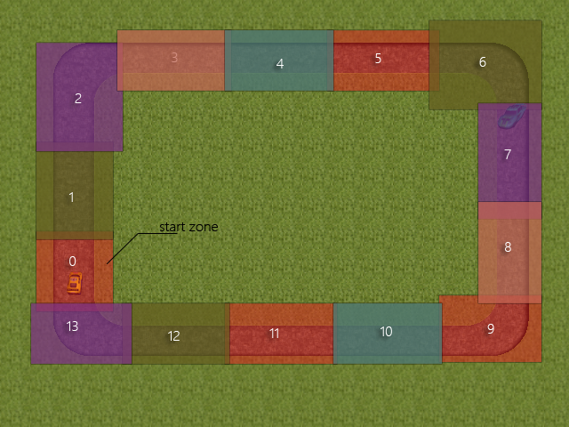
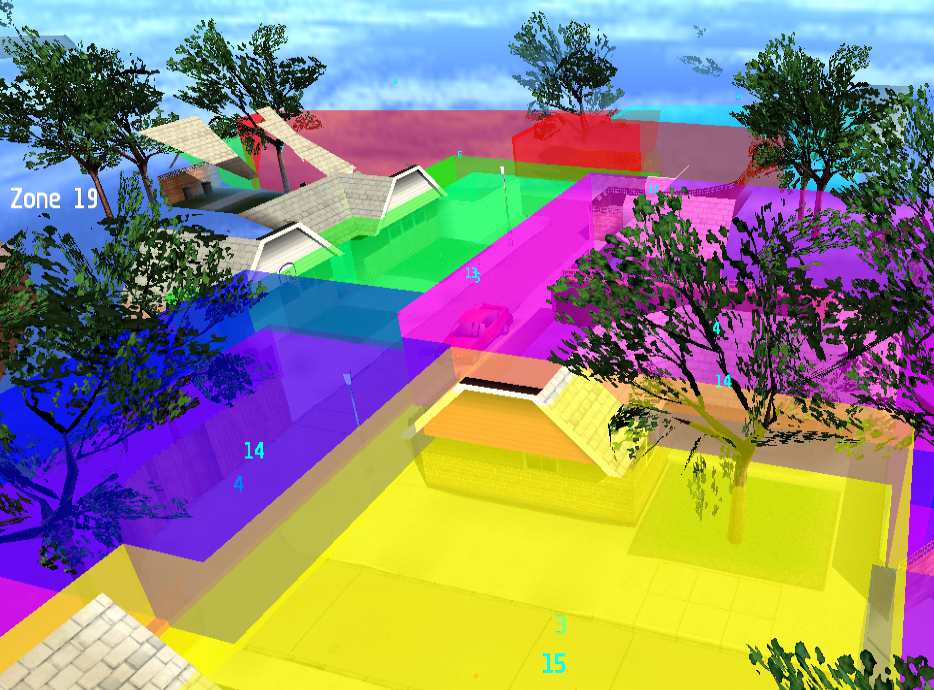
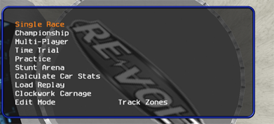

Track Zones
Keymap

What are Track Zones?
Just like the name hints, track zones are actually zones (boxes) that define which parts of tracks are race-able as well as the racing order.
For this, each track zone has a unique ID which defines the order. Therefore Track zone 0 is the start zone (where all the cars should start from and inside) up to the final track zone whose ID should be number_of_trackzones – 1.

Track Zones in Races
The track zones are actually ‘invisible’ inside a normal race, however, they’re actually present and they define the right orientation and position of the player as well as other cars with the help of POS nodes.

Track Zones in MakeItGood

Just like any other MakeItGood mode, Track zones can be accessed through ‘Edit Mode’ accessible using -dev mode or using MAKEITGOOD as the player name.
Track zone edit mode is one of the easiest mode, in fact, there are not many keys you have to use.
Controls
- Insert: Inserts a new track zone.
- Numpad + and – : Modify the ID of current track zone.
- Moving mouse cursor to a track zone and clicking on Enter: Select a track zone
- Space: toggle the selected track zone’s one of the 6 surfaces (top, right, bottom, left, front, back) for later modification
- Numpad
*and / : Extend or shrink the currently selected surface - Numpad
*and / with CTRL pressed (down) : Extend or Shrink faster - Numpad
*and / with SHIFT pressed (down) : Extend or Shrink all surfaces - Numpad
*and / with SHIFT and CTRL pressed (down) : Extend or Shrink all surfaces faster. - the key labeled 2 (above q,w,e,r) : Toggle seeing other track zones
As well as the classic edit mode controls:
- Numpad 1, 2, 3: 90° rotation along the chosen coordination system
- Numpad 0: restore orientation
- Tab: toggle the chosen coordination system (camera/world)
- Alt: Toggle the axis system (X-Y alone, X-Z alone, X alone etc…)
- F4: Entering edit mode
- CTRL+F4: Saving current work
Tutorial written by Kallel